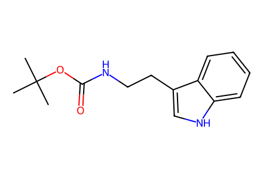
CC(C)(C)OC(=O)NCCc1c[nH]c2ccccc12Main article Schemes 3–6 and SI preparations S4–S33; mechanistic hypotheses 2–4, 22, 37–44 and failed retrosynthetic intermediates are not isolated compounds. Racemic and mixed configurations explicitly qualified. Partial stereo: racemic1b/27b relative configuration and hemiacetal C7 require review. Unquantified bromination screening entries1/3 not separate events; mechanistic intermediates excluded. Facts compiled deterministically; independent review pending.
完整 JSON · 逐步 CSV · 路线序列 · SDF · HRMS 核对
| 事件 | 分子连接 | 报告产率 | Canonical reaction SMILES |
|---|---|---|---|
| A01 | 11 → 12 | not reported | CC(C)(C)OC(=O)NCCc1c[nH]c2ccccc12>>CC(C)(C)OC(=O)NCCc1c(B2OC(C)(C)C(C)(C)O2)[nH]c2c(B3OC(C)(C)C(C)(C)O3)cccc12 |
| A02 | 12 → 13 | 13: 64% | CC(C)(C)OC(=O)NCCc1c(B2OC(C)(C)C(C)(C)O2)[nH]c2c(B3OC(C)(C)C(C)(C)O3)cccc12>>CC(C)(C)OC(=O)NCCc1c[nH]c2c(B3OC(C)(C)C(C)(C)O3)cccc12 |
| A03 | 13 → 5 | 5: 59% | CC(C)(C)OC(=O)NCCc1c[nH]c2c(B3OC(C)(C)C(C)(C)O3)cccc12>>CC(C)(C)OC(=O)NCCc1c[nH]c2c1C(=O)C=CC2=O |
| B01 | dimethylurea + glyoxylic acid → S1 | not reported | CNC(=O)NC.O=CC(=O)O>>CN1C(=O)C(O)N(C)C1=O |
| B02 | S1 → 7 | not reported | CN1C(=O)C(O)N(C)C1=O>>CN1C(=O)C(Cl)N(C)C1=O |
| B03 | dopamine → S2 | not reported | NCCc1ccc(O)c(O)c1>>CC(C)(C)[Si]1(C(C)(C)C)Oc2ccc(CCN)cc2O1 |
| B04 | S2 + formaldehyde → 14 | 14: 44% | C=O.CC(C)(C)[Si]1(C(C)(C)C)Oc2ccc(CCN)cc2O1>>CN(C)CCc1ccc2c(c1)O[Si](C(C)(C)C)(C(C)(C)C)O2 |
| B05 | 14 + 7 → 15 + S3 | 65% combined mixture yield | CN(C)CCc1ccc2c(c1)O[Si](C(C)(C)C)(C(C)(C)C)O2.CN1C(=O)C(Cl)N(C)C1=O>>CN(C)CCc1ccc(OC2C(=O)N(C)C(=O)N2C)c(O[Si](O)(C(C)(C)C)C(C)(C)C)c1.CN(C)CCc1ccc(O[Si](O)(C(C)(C)C)C(C)(C)C)c(OC2C(=O)N(C)C(=O)N2C)c1 |
| B06 | 15 → S4 | S4: 68% | CN(C)CCc1ccc(O[Si](O)(C(C)(C)C)C(C)(C)C)c(OC2C(=O)N(C)C(=O)N2C)c1>>[BH3-][N+](C)(C)CCc1ccc(O[Si](O)(C(C)(C)C)C(C)(C)C)c(OC2C(=O)N(C)C(=O)N2C)c1 |
| B07 | S4 → 16 | 16: 81% | [BH3-][N+](C)(C)CCc1ccc(O[Si](O)(C(C)(C)C)C(C)(C)C)c(OC2C(=O)N(C)C(=O)N2C)c1>>[BH3-][N+](C)(C)CCc1ccc(OCc2ccccc2)c(OC2C(=O)N(C)C(=O)N2C)c1 |
| B08 | 15 → 8 | 8: 81% | CN(C)CCc1ccc(O[Si](O)(C(C)(C)C)C(C)(C)C)c(OC2C(=O)N(C)C(=O)N2C)c1>>CN(C)CCc1ccc(OCc2ccccc2)c(OC2C(=O)N(C)C(=O)N2C)c1 |
| B09 | 8 → 16 | 16: 85% | CN(C)CCc1ccc(OCc2ccccc2)c(OC2C(=O)N(C)C(=O)N2C)c1>>[BH3-][N+](C)(C)CCc1ccc(OCc2ccccc2)c(OC2C(=O)N(C)C(=O)N2C)c1 |
| B10 | 16 → 17 | 17: 60% | [BH3-][N+](C)(C)CCc1ccc(OCc2ccccc2)c(OC2C(=O)N(C)C(=O)N2C)c1>>[BH3-][N+](C)(C)CCc1ccc(OCc2ccccc2)c(Oc2c(O[Si](C)(C)C(C)(C)C)n(C)c(=O)n2C)c1 |
| C01 | 5 + 17 → 18 | 18: 42% | CC(C)(C)OC(=O)NCCc1c[nH]c2c1C(=O)C=CC2=O.[BH3-][N+](C)(C)CCc1ccc(OCc2ccccc2)c(Oc2c(O[Si](C)(C)C(C)(C)C)n(C)c(=O)n2C)c1>>[BH3-][N+](C)(C)CCc1ccc(OCc2ccccc2)c(OC2(C3=CC(=O)c4[nH]cc(CCNC(=O)OC(C)(C)C)c4C3=O)C(=O)N(C)C(=O)N2C)c1 |
| C02 | 23 + 16 → 18 | 18: 89% | CC(C)(C)OC(=O)NCCc1c[nH]c2c1C(=O)C=C(Br)C2=O.[BH3-][N+](C)(C)CCc1ccc(OCc2ccccc2)c(OC2C(=O)N(C)C(=O)N2C)c1>>[BH3-][N+](C)(C)CCc1ccc(OCc2ccccc2)c(OC2(C3=CC(=O)c4[nH]cc(CCNC(=O)OC(C)(C)C)c4C3=O)C(=O)N(C)C(=O)N2C)c1 |
| C03 | 23 + 17 → 18 | 18: 21% | CC(C)(C)OC(=O)NCCc1c[nH]c2c1C(=O)C=C(Br)C2=O.[BH3-][N+](C)(C)CCc1ccc(OCc2ccccc2)c(Oc2c(O[Si](C)(C)C(C)(C)C)n(C)c(=O)n2C)c1>>[BH3-][N+](C)(C)CCc1ccc(OCc2ccccc2)c(OC2(C3=CC(=O)c4[nH]cc(CCNC(=O)OC(C)(C)C)c4C3=O)C(=O)N(C)C(=O)N2C)c1 |
| C04 | 18 → 9 | 9: 90% | [BH3-][N+](C)(C)CCc1ccc(OCc2ccccc2)c(OC2(C3=CC(=O)c4[nH]cc(CCNC(=O)OC(C)(C)C)c4C3=O)C(=O)N(C)C(=O)N2C)c1>>CN(C)CCc1ccc(OCc2ccccc2)c(OC2(C3=CC(=O)c4[nH]cc(CCNC(=O)OC(C)(C)C)c4C3=O)C(=O)N(C)C(=O)N2C)c1 |
| C05 | 9 → 19 + 10 | not reported | CN(C)CCc1ccc(OCc2ccccc2)c(OC2(C3=CC(=O)c4[nH]cc(CCNC(=O)OC(C)(C)C)c4C3=O)C(=O)N(C)C(=O)N2C)c1>>CN(C)CCc1ccc(OCc2ccccc2)c(O)c1C1C(=O)c2[nH]cc(CCNC(=O)OC(C)(C)C)c2C(=O)C1=C1C(=O)N(C)C(=O)N1C.CN(C)CCc1ccc(OCc2ccccc2)c2c1C1=C(C(=O)c3c(CCNC(=O)OC(C)(C)C)c[nH]c3C1=O)C1(O2)C(=O)N(C)C(=O)N1C |
| C06 | 19 → 10 | not reported | CN(C)CCc1ccc(OCc2ccccc2)c(O)c1C1C(=O)c2[nH]cc(CCNC(=O)OC(C)(C)C)c2C(=O)C1=C1C(=O)N(C)C(=O)N1C>>CN(C)CCc1ccc(OCc2ccccc2)c2c1C1=C(C(=O)c3c(CCNC(=O)OC(C)(C)C)c[nH]c3C1=O)C1(O2)C(=O)N(C)C(=O)N1C |
| C07 | 9 → 10 | 10: 80% | CN(C)CCc1ccc(OCc2ccccc2)c(OC2(C3=CC(=O)c4[nH]cc(CCNC(=O)OC(C)(C)C)c4C3=O)C(=O)N(C)C(=O)N2C)c1>>CN(C)CCc1ccc(OCc2ccccc2)c2c1C1=C(C(=O)c3c(CCNC(=O)OC(C)(C)C)c[nH]c3C1=O)C1(O2)C(=O)N(C)C(=O)N1C |
| C08 | 10 → 20a | not reported | CN(C)CCc1ccc(OCc2ccccc2)c2c1C1=C(C(=O)c3c(CCNC(=O)OC(C)(C)C)c[nH]c3C1=O)C1(O2)C(=O)N(C)C(=O)N1C>>CN(C)CCc1ccc(OCc2ccccc2)c(O)c1-c1c(C2C(=O)N(C)C(=O)N2C)c(O)c2c(CCNC(=O)OC(C)(C)C)c[nH]c2c1O |
| C09 | 20a → 20b | not reported | CN(C)CCc1ccc(OCc2ccccc2)c(O)c1-c1c(C2C(=O)N(C)C(=O)N2C)c(O)c2c(CCNC(=O)OC(C)(C)C)c[nH]c2c1O>>CN(C)CCc1ccc(O)c(O)c1-c1c(C2C(=O)N(C)C(=O)N2C)c(O)c2c(CCNC(=O)OC(C)(C)C)c[nH]c2c1O |
| C10 | 20b → 21 | 21: 50% | CN(C)CCc1ccc(O)c(O)c1-c1c(C2C(=O)N(C)C(=O)N2C)c(O)c2c(CCNC(=O)OC(C)(C)C)c[nH]c2c1O>>CN1C(=O)N(C)C2(Oc3c(O)cc4c(c3C3=C2C(=O)c2c(CCNC(=O)OC(C)(C)C)c[nH]c2C3=O)CC[N+]4(C)C)C1=O |
| C11 | 10 → 1a | 1a: 94% | CN(C)CCc1ccc(OCc2ccccc2)c2c1C1=C(C(=O)c3c(CCNC(=O)OC(C)(C)C)c[nH]c3C1=O)C1(O2)C(=O)N(C)C(=O)N1C>>CN1C(=O)N(C)C2(Oc3c(O)cc4c(c3C3=C2C(=O)c2c(CCN)c[nH]c2C3=O)CC[N+]4(C)C)C1=O |
| C12 | 10 → 1b | 1b: 21% | CN(C)CCc1ccc(OCc2ccccc2)c2c1C1=C(C(=O)c3c(CCNC(=O)OC(C)(C)C)c[nH]c3C1=O)C1(O2)C(=O)N(C)C(=O)N1C>>CN1C(=O)N(C)C2(Oc3c(O)cc4c(c3C3=C2C(=O)c2c(CCN)c[nH]c2C3=O)C(O)C[N+]4(C)C)C1=O |
| C13 | 10 → 45 | 45: 60% | CN(C)CCc1ccc(OCc2ccccc2)c2c1C1=C(C(=O)c3c(CCNC(=O)OC(C)(C)C)c[nH]c3C1=O)C1(O2)C(=O)N(C)C(=O)N1C>>CN(C)CCc1ccc(O)c2c1C1=C(C(=O)c3c(CCN)c[nH]c3C1=O)C1(O2)C(=O)N(C)C(=O)N1C |
| C14 | 10 → 10a | not reported | CN(C)CCc1ccc(OCc2ccccc2)c2c1C1=C(C(=O)c3c(CCNC(=O)OC(C)(C)C)c[nH]c3C1=O)C1(O2)C(=O)N(C)C(=O)N1C>>CN(C)CCc1ccc(O)c2c1C1=C(C(=O)c3c(CCNC(=O)OC(C)(C)C)c[nH]c3C1=O)C1(O2)C(=O)N(C)C(=O)N1C |
| D01 | 24 + 16 → S5 | S5: 88% | CC(C)(C)OC(=O)NCCc1c[nH]c2c1C(=O)C(Br)=CC2=O.[BH3-][N+](C)(C)CCc1ccc(OCc2ccccc2)c(OC2C(=O)N(C)C(=O)N2C)c1>>[BH3-][N+](C)(C)CCc1ccc(OCc2ccccc2)c(OC2(C3=CC(=O)c4c(CCNC(=O)OC(C)(C)C)c[nH]c4C3=O)C(=O)N(C)C(=O)N2C)c1 |
| D02 | S5 → 25 | 25: 71% | [BH3-][N+](C)(C)CCc1ccc(OCc2ccccc2)c(OC2(C3=CC(=O)c4c(CCNC(=O)OC(C)(C)C)c[nH]c4C3=O)C(=O)N(C)C(=O)N2C)c1>>CN(C)CCc1ccc(OCc2ccccc2)c(OC2(C3=CC(=O)c4c(CCNC(=O)OC(C)(C)C)c[nH]c4C3=O)C(=O)N(C)C(=O)N2C)c1 |
| D03 | 25 → 26 | 26: 79% | CN(C)CCc1ccc(OCc2ccccc2)c(OC2(C3=CC(=O)c4c(CCNC(=O)OC(C)(C)C)c[nH]c4C3=O)C(=O)N(C)C(=O)N2C)c1>>CN(C)CCc1ccc(OCc2ccccc2)c2c1C1=C(C(=O)c3[nH]cc(CCNC(=O)OC(C)(C)C)c3C1=O)C1(O2)C(=O)N(C)C(=O)N1C |
| D04 | 26 → 27a | 27a: 92% | CN(C)CCc1ccc(OCc2ccccc2)c2c1C1=C(C(=O)c3[nH]cc(CCNC(=O)OC(C)(C)C)c3C1=O)C1(O2)C(=O)N(C)C(=O)N1C>>CN1C(=O)N(C)C2(Oc3c(O)cc4c(c3C3=C2C(=O)c2[nH]cc(CCN)c2C3=O)CC[N+]4(C)C)C1=O |
| D05 | 26 → 27b | 27b: 23.2% | CN(C)CCc1ccc(OCc2ccccc2)c2c1C1=C(C(=O)c3[nH]cc(CCNC(=O)OC(C)(C)C)c3C1=O)C1(O2)C(=O)N(C)C(=O)N1C>>CN1C(=O)N(C)C2(Oc3c(O)cc4c(c3C3=C2C(=O)c2[nH]cc(CCN)c2C3=O)C(O)C[N+]4(C)C)C1=O |
| E01 | L-adrenaline → S6 | S6: 92% | CNC[C@H](O)c1ccc(O)c(O)c1>>CN(C[C@H](O)c1ccc(O)c(O)c1)C(=O)OC(C)(C)C |
| E02 | S6 → S7 | S7: 68% | CN(C[C@H](O)c1ccc(O)c(O)c1)C(=O)OC(C)(C)C>>CN(C[C@H](O)c1ccc2c(c1)OC(c1ccccc1)O2)C(=O)OC(C)(C)C |
| E03 | S7 → 28 | not reported | CN(C[C@H](O)c1ccc2c(c1)OC(c1ccccc1)O2)C(=O)OC(C)(C)C>>CN(C)C[C@H](O)c1ccc2c(c1)OC(c1ccccc1)O2 |
| E04 | 28 → 29a + 29b | 29a: 35%; 29b: 41% | CN(C)C[C@H](O)c1ccc2c(c1)OC(c1ccccc1)O2>>CN(C)C[C@H](O)c1ccc(O)c(OCc2ccccc2)c1.CN(C)C[C@H](O)c1ccc(OCc2ccccc2)c(O)c1 |
| E05 | 29a + 7 → S8 | S8: 81% | CN(C)C[C@H](O)c1ccc(OCc2ccccc2)c(O)c1.CN1C(=O)C(Cl)N(C)C1=O>>CN(C)C[C@H](O)c1ccc(OCc2ccccc2)c(OC2C(=O)N(C)C(=O)N2C)c1 |
| E06 | S8 → S9 | S9: 98% | CN(C)C[C@H](O)c1ccc(OCc2ccccc2)c(OC2C(=O)N(C)C(=O)N2C)c1>>CC[Si](CC)(CC)O[C@@H](CN(C)C)c1ccc(OCc2ccccc2)c(OC2C(=O)N(C)C(=O)N2C)c1 |
| E07 | S9 → 30 | 30: 88% | CC[Si](CC)(CC)O[C@@H](CN(C)C)c1ccc(OCc2ccccc2)c(OC2C(=O)N(C)C(=O)N2C)c1>>[BH3-][N+](C)(C)C[C@H](O[Si](CC)(CC)CC)c1ccc(OCc2ccccc2)c(OC2C(=O)N(C)C(=O)N2C)c1 |
| E08 | 30 + 23 → S10 | S10: 66% | CC(C)(C)OC(=O)NCCc1c[nH]c2c1C(=O)C=C(Br)C2=O.[BH3-][N+](C)(C)C[C@H](O[Si](CC)(CC)CC)c1ccc(OCc2ccccc2)c(OC2C(=O)N(C)C(=O)N2C)c1>>[BH3-][N+](C)(C)C[C@H](O[Si](CC)(CC)CC)c1ccc(OCc2ccccc2)c(OC2(C3=CC(=O)c4[nH]cc(CCNC(=O)OC(C)(C)C)c4C3=O)C(=O)N(C)C(=O)N2C)c1 |
| E09 | S10 → S11 | S11: 98% | [BH3-][N+](C)(C)C[C@H](O[Si](CC)(CC)CC)c1ccc(OCc2ccccc2)c(OC2(C3=CC(=O)c4[nH]cc(CCNC(=O)OC(C)(C)C)c4C3=O)C(=O)N(C)C(=O)N2C)c1>>CC[Si](CC)(CC)O[C@@H](CN(C)C)c1ccc(OCc2ccccc2)c(OC2(C3=CC(=O)c4[nH]cc(CCNC(=O)OC(C)(C)C)c4C3=O)C(=O)N(C)C(=O)N2C)c1 |
| E10 | S11 → 31 | 31: 67% | CC[Si](CC)(CC)O[C@@H](CN(C)C)c1ccc(OCc2ccccc2)c(OC2(C3=CC(=O)c4[nH]cc(CCNC(=O)OC(C)(C)C)c4C3=O)C(=O)N(C)C(=O)N2C)c1>>CN(C)C[C@H](O)c1ccc(OCc2ccccc2)c(OC2(C3=CC(=O)c4[nH]cc(CCNC(=O)OC(C)(C)C)c4C3=O)C(=O)N(C)C(=O)N2C)c1 |
| E11 | 31 → 32 + 33 | 32: 22%; 33: 13% | CN(C)C[C@H](O)c1ccc(OCc2ccccc2)c(OC2(C3=CC(=O)c4[nH]cc(CCNC(=O)OC(C)(C)C)c4C3=O)C(=O)N(C)C(=O)N2C)c1>>CN(C)C[C@@H]1OC2(O)C3=C(C(=O)c4c(CCNC(=O)OC(C)(C)C)c[nH]c42)[C@@]2(Oc4c(OCc5ccccc5)ccc1c43)C(=O)N(C)C(=O)N2C.CN(C)C[C@@H]1OC2(O)C3=C(C(=O)c4c(CCNC(=O)OC(C)(C)C)c[nH]c42)[C@]2(Oc4c(OCc5ccccc5)ccc1c43)C(=O)N(C)C(=O)N2C |
| E12 | 32 → 34 | 34: 73% | CN(C)C[C@@H]1OC2(O)C3=C(C(=O)c4c(CCNC(=O)OC(C)(C)C)c[nH]c42)[C@]2(Oc4c(OCc5ccccc5)ccc1c43)C(=O)N(C)C(=O)N2C>>CC[Si](CC)(CC)OC12O[C@@H](CN(C)C)c3ccc(OCc4ccccc4)c4c3C1=C(C(=O)c1c(CCNC(=O)OC(C)(C)C)c[nH]c12)[C@]1(O4)C(=O)N(C)C(=O)N1C |
| E13 | 33 → 35 | 35: 68% | CN(C)C[C@@H]1OC2(O)C3=C(C(=O)c4c(CCNC(=O)OC(C)(C)C)c[nH]c42)[C@@]2(Oc4c(OCc5ccccc5)ccc1c43)C(=O)N(C)C(=O)N2C>>CC[Si](CC)(CC)OC12O[C@@H](CN(C)C)c3ccc(OCc4ccccc4)c4c3C1=C(C(=O)c1c(CCNC(=O)OC(C)(C)C)c[nH]c12)[C@@]1(O4)C(=O)N(C)C(=O)N1C |
| E14 | 32 → (+)-1b + 36 | (+)-1b: 62% | CN(C)C[C@@H]1OC2(O)C3=C(C(=O)c4c(CCNC(=O)OC(C)(C)C)c[nH]c42)[C@]2(Oc4c(OCc5ccccc5)ccc1c43)C(=O)N(C)C(=O)N2C>>CN1C(=O)N(C)[C@@]2(Oc3c(O)cc4c(c3C3=C2C(=O)c2c(CCN)c[nH]c2C3=O)[C@@H](O)C[N+]4(C)C)C1=O.CN1C(=O)N(C)[C@]2(Oc3c(O)cc4c(c3C3=C2C(=O)c2c(CCN)c[nH]c2C3=O)[C@@H](O)C[N+]4(C)C)C1=O |
| E15 | 33 → 36 + (+)-1b | 36: 51% | CN(C)C[C@@H]1OC2(O)C3=C(C(=O)c4c(CCNC(=O)OC(C)(C)C)c[nH]c42)[C@@]2(Oc4c(OCc5ccccc5)ccc1c43)C(=O)N(C)C(=O)N2C>>CN1C(=O)N(C)[C@@]2(Oc3c(O)cc4c(c3C3=C2C(=O)c2c(CCN)c[nH]c2C3=O)[C@@H](O)C[N+]4(C)C)C1=O.CN1C(=O)N(C)[C@]2(Oc3c(O)cc4c(c3C3=C2C(=O)c2c(CCN)c[nH]c2C3=O)[C@@H](O)C[N+]4(C)C)C1=O |
| F01 | 4-hydroxyindole + nitroethylene → S12 | S12: 60% | C=C[N+](=O)[O-].Oc1cccc2[nH]ccc12>>O=[N+]([O-])CCc1c[nH]c2cccc(O)c12 |
| F02 | S12 → S13 | S13: 75% | O=[N+]([O-])CCc1c[nH]c2cccc(O)c12>>CC(C)(C)OC(=O)NCCc1c[nH]c2cccc(O)c12 |
| F03 | S13 → 5 | 5: 89% | CC(C)(C)OC(=O)NCCc1c[nH]c2cccc(O)c12>>CC(C)(C)OC(=O)NCCc1c[nH]c2c1C(=O)C=CC2=O |
| G01 | 3,4-dihydroxybenzaldehyde → S14 | S14: 52% | O=Cc1ccc(O)c(O)c1>>O=Cc1ccc(OCc2ccccc2)c(O)c1 |
| G02 | S14 → S15 | S15: 98% | O=Cc1ccc(OCc2ccccc2)c(O)c1>>COC=Cc1ccc(OCc2ccccc2)c(O)c1 |
| G03 | S15 → S16 | not reported | COC=Cc1ccc(OCc2ccccc2)c(O)c1>>O=CCc1ccc(OCc2ccccc2)c(O)c1 |
| G04 | S16 + dimethylamine → 6 | 6: 71% | CNC.O=CCc1ccc(OCc2ccccc2)c(O)c1>>CN(C)CCc1ccc(OCc2ccccc2)c(O)c1 |
| G05 | 6 + 7 → 8 | 8: 90% | CN(C)CCc1ccc(OCc2ccccc2)c(O)c1.CN1C(=O)C(Cl)N(C)C1=O>>CN(C)CCc1ccc(OCc2ccccc2)c(OC2C(=O)N(C)C(=O)N2C)c1 |
| H01 | 5 → S17-bromo | S17-bromo: 88% | CC(C)(C)OC(=O)NCCc1c[nH]c2c1C(=O)C=CC2=O>>CC(C)(C)OC(=O)NCCc1c(Br)[nH]c2c1C(=O)C=CC2=O |
| H02 | 5 → S18 | S18: 85% | CC(C)(C)OC(=O)NCCc1c[nH]c2c1C(=O)C=CC2=O>>CC(C)(C)OC(=O)NCCc1cn(C(=O)OC(C)(C)C)c2c1C(=O)C=CC2=O |
| H03 | 5 → S18 | S18: 87% | CC(C)(C)OC(=O)NCCc1c[nH]c2c1C(=O)C=CC2=O>>CC(C)(C)OC(=O)NCCc1cn(C(=O)OC(C)(C)C)c2c1C(=O)C=CC2=O |
| H04 | 5 → 23 + 24 | 92% combined mixture yield | CC(C)(C)OC(=O)NCCc1c[nH]c2c1C(=O)C=CC2=O>>CC(C)(C)OC(=O)NCCc1c[nH]c2c1C(=O)C(Br)=CC2=O.CC(C)(C)OC(=O)NCCc1c[nH]c2c1C(=O)C=C(Br)C2=O |
| H05 | 5 → 23 + 24 | 81% combined mixture yield | CC(C)(C)OC(=O)NCCc1c[nH]c2c1C(=O)C=CC2=O>>CC(C)(C)OC(=O)NCCc1c[nH]c2c1C(=O)C(Br)=CC2=O.CC(C)(C)OC(=O)NCCc1c[nH]c2c1C(=O)C=C(Br)C2=O |
| H06 | 5 → 23 + 24 | 88% combined mixture yield | CC(C)(C)OC(=O)NCCc1c[nH]c2c1C(=O)C=CC2=O>>CC(C)(C)OC(=O)NCCc1c[nH]c2c1C(=O)C(Br)=CC2=O.CC(C)(C)OC(=O)NCCc1c[nH]c2c1C(=O)C=C(Br)C2=O |
| H07 | S18 → S20 + S21 | 93% combined mixture yield | CC(C)(C)OC(=O)NCCc1cn(C(=O)OC(C)(C)C)c2c1C(=O)C=CC2=O>>CC(C)(C)OC(=O)NCCc1cn(C(=O)OC(C)(C)C)c2c1C(=O)C(Br)=CC2=O.CC(C)(C)OC(=O)NCCc1cn(C(=O)OC(C)(C)C)c2c1C(=O)C=C(Br)C2=O |
| H08 | S20 + S21 → 23 + 24 | not reported | CC(C)(C)OC(=O)NCCc1cn(C(=O)OC(C)(C)C)c2c1C(=O)C(Br)=CC2=O.CC(C)(C)OC(=O)NCCc1cn(C(=O)OC(C)(C)C)c2c1C(=O)C=C(Br)C2=O>>CC(C)(C)OC(=O)NCCc1c[nH]c2c1C(=O)C(Br)=CC2=O.CC(C)(C)OC(=O)NCCc1c[nH]c2c1C(=O)C=C(Br)C2=O |
| H09 | 23 + 24 → S20 + S21 | not reported | CC(C)(C)OC(=O)NCCc1c[nH]c2c1C(=O)C(Br)=CC2=O.CC(C)(C)OC(=O)NCCc1c[nH]c2c1C(=O)C=C(Br)C2=O>>CC(C)(C)OC(=O)NCCc1cn(C(=O)OC(C)(C)C)c2c1C(=O)C(Br)=CC2=O.CC(C)(C)OC(=O)NCCc1cn(C(=O)OC(C)(C)C)c2c1C(=O)C=C(Br)C2=O |
| I01 | S13 → S22 | S22: 97% | CC(C)(C)OC(=O)NCCc1c[nH]c2cccc(O)c12>>CC(C)(C)OC(=O)NCCc1c[nH]c2cccc(O[Si](C)(C)C(C)(C)C)c12 |
| I02 | S22 → S23 | S23: 97% | CC(C)(C)OC(=O)NCCc1c[nH]c2cccc(O[Si](C)(C)C(C)(C)C)c12>>CC(C)(C)OC(=O)NCCc1cn(C(=O)OC(C)(C)C)c2cccc(O[Si](C)(C)C(C)(C)C)c12 |
| I03 | S23 → S24 | S24: 83% | CC(C)(C)OC(=O)NCCc1cn(C(=O)OC(C)(C)C)c2cccc(O[Si](C)(C)C(C)(C)C)c12>>CC(C)(C)OC(=O)NCCc1cn(C(=O)OC(C)(C)C)c2cccc(O)c12 |
| I04 | S24 → S25 | S25: 46% | CC(C)(C)OC(=O)NCCc1cn(C(=O)OC(C)(C)C)c2cccc(O)c12>>CC(C)(C)OC(=O)NCCc1cn(C(=O)OC(C)(C)C)c2ccc(Br)c(O)c12 |
| I05 | S25 → 24 | 24: 26% | CC(C)(C)OC(=O)NCCc1cn(C(=O)OC(C)(C)C)c2ccc(Br)c(O)c12>>CC(C)(C)OC(=O)NCCc1c[nH]c2c1C(=O)C(Br)=CC2=O |

CC(C)(C)OC(=O)NCCc1c[nH]c2ccccc12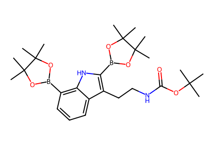
CC(C)(C)OC(=O)NCCc1c(B2OC(C)(C)C(C)(C)O2)[nH]c2c(B3OC(C)(C)C(C)(C)O3)cccc12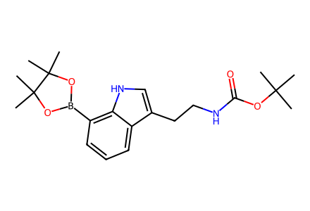
CC(C)(C)OC(=O)NCCc1c[nH]c2c(B3OC(C)(C)C(C)(C)O3)cccc12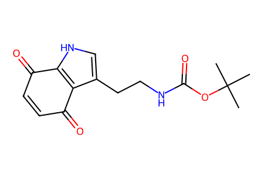
CC(C)(C)OC(=O)NCCc1c[nH]c2c1C(=O)C=CC2=O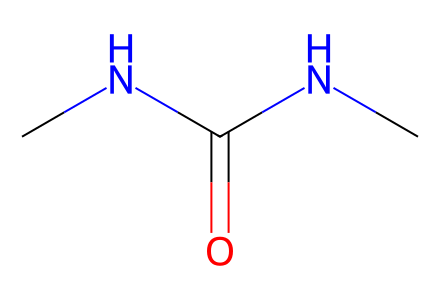
CNC(=O)NC
O=CC(=O)O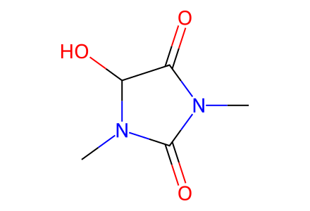
CN1C(=O)C(O)N(C)C1=O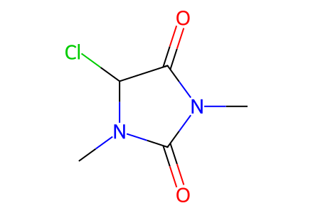
CN1C(=O)C(Cl)N(C)C1=O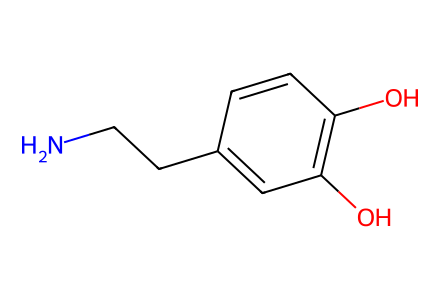
NCCc1ccc(O)c(O)c1
C=O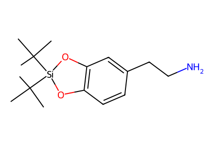
CC(C)(C)[Si]1(C(C)(C)C)Oc2ccc(CCN)cc2O1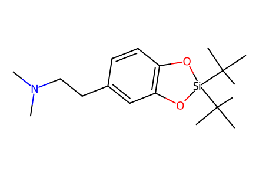
CN(C)CCc1ccc2c(c1)O[Si](C(C)(C)C)(C(C)(C)C)O2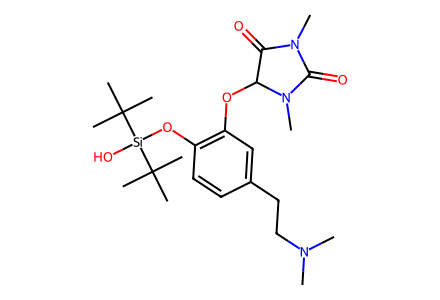
CN(C)CCc1ccc(O[Si](O)(C(C)(C)C)C(C)(C)C)c(OC2C(=O)N(C)C(=O)N2C)c1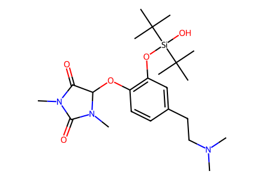
CN(C)CCc1ccc(OC2C(=O)N(C)C(=O)N2C)c(O[Si](O)(C(C)(C)C)C(C)(C)C)c1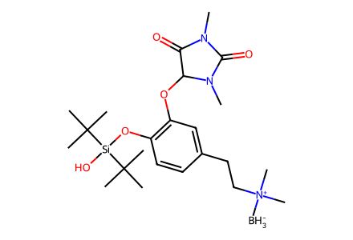
[BH3-][N+](C)(C)CCc1ccc(O[Si](O)(C(C)(C)C)C(C)(C)C)c(OC2C(=O)N(C)C(=O)N2C)c1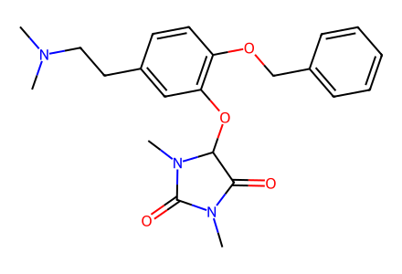
CN(C)CCc1ccc(OCc2ccccc2)c(OC2C(=O)N(C)C(=O)N2C)c1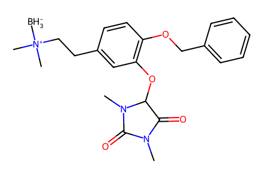
[BH3-][N+](C)(C)CCc1ccc(OCc2ccccc2)c(OC2C(=O)N(C)C(=O)N2C)c1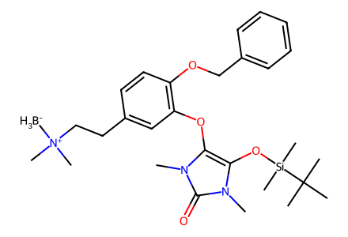
[BH3-][N+](C)(C)CCc1ccc(OCc2ccccc2)c(Oc2c(O[Si](C)(C)C(C)(C)C)n(C)c(=O)n2C)c1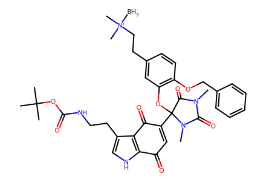
[BH3-][N+](C)(C)CCc1ccc(OCc2ccccc2)c(OC2(C3=CC(=O)c4[nH]cc(CCNC(=O)OC(C)(C)C)c4C3=O)C(=O)N(C)C(=O)N2C)c1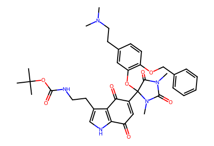
CN(C)CCc1ccc(OCc2ccccc2)c(OC2(C3=CC(=O)c4[nH]cc(CCNC(=O)OC(C)(C)C)c4C3=O)C(=O)N(C)C(=O)N2C)c1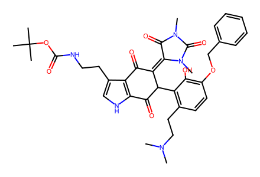
CN(C)CCc1ccc(OCc2ccccc2)c(O)c1C1C(=O)c2[nH]cc(CCNC(=O)OC(C)(C)C)c2C(=O)C1=C1C(=O)N(C)C(=O)N1C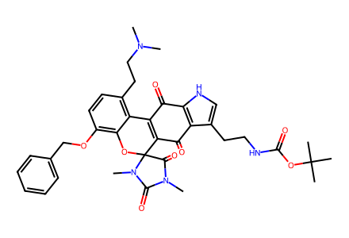
CN(C)CCc1ccc(OCc2ccccc2)c2c1C1=C(C(=O)c3c(CCNC(=O)OC(C)(C)C)c[nH]c3C1=O)C1(O2)C(=O)N(C)C(=O)N1C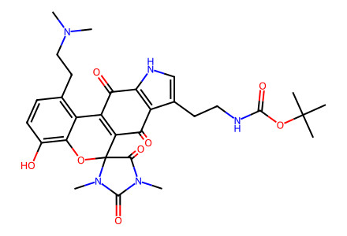
CN(C)CCc1ccc(O)c2c1C1=C(C(=O)c3c(CCNC(=O)OC(C)(C)C)c[nH]c3C1=O)C1(O2)C(=O)N(C)C(=O)N1C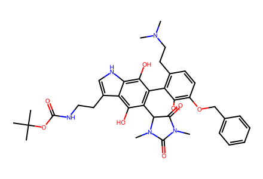
CN(C)CCc1ccc(OCc2ccccc2)c(O)c1-c1c(C2C(=O)N(C)C(=O)N2C)c(O)c2c(CCNC(=O)OC(C)(C)C)c[nH]c2c1O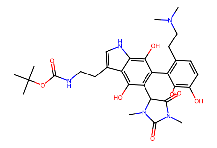
CN(C)CCc1ccc(O)c(O)c1-c1c(C2C(=O)N(C)C(=O)N2C)c(O)c2c(CCNC(=O)OC(C)(C)C)c[nH]c2c1O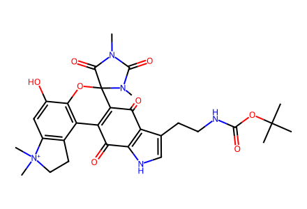
CN1C(=O)N(C)C2(Oc3c(O)cc4c(c3C3=C2C(=O)c2c(CCNC(=O)OC(C)(C)C)c[nH]c2C3=O)CC[N+]4(C)C)C1=O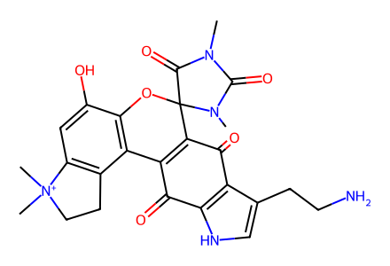
CN1C(=O)N(C)C2(Oc3c(O)cc4c(c3C3=C2C(=O)c2c(CCN)c[nH]c2C3=O)CC[N+]4(C)C)C1=O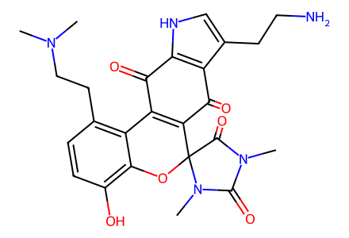
CN(C)CCc1ccc(O)c2c1C1=C(C(=O)c3c(CCN)c[nH]c3C1=O)C1(O2)C(=O)N(C)C(=O)N1C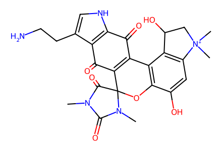
CN1C(=O)N(C)C2(Oc3c(O)cc4c(c3C3=C2C(=O)c2c(CCN)c[nH]c2C3=O)C(O)C[N+]4(C)C)C1=O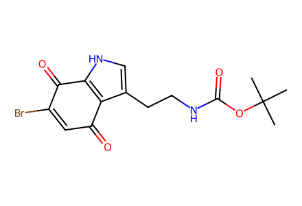
CC(C)(C)OC(=O)NCCc1c[nH]c2c1C(=O)C=C(Br)C2=O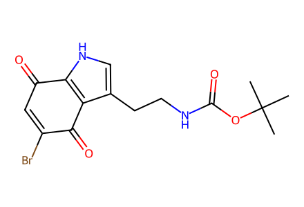
CC(C)(C)OC(=O)NCCc1c[nH]c2c1C(=O)C(Br)=CC2=O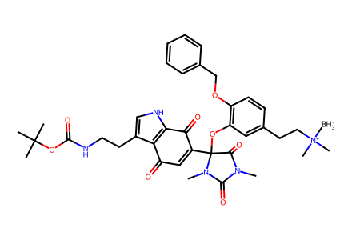
[BH3-][N+](C)(C)CCc1ccc(OCc2ccccc2)c(OC2(C3=CC(=O)c4c(CCNC(=O)OC(C)(C)C)c[nH]c4C3=O)C(=O)N(C)C(=O)N2C)c1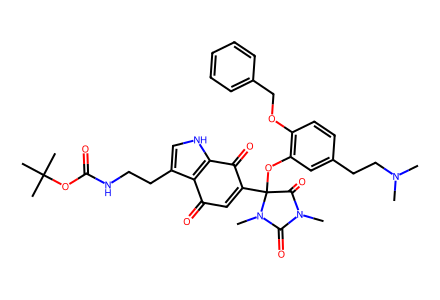
CN(C)CCc1ccc(OCc2ccccc2)c(OC2(C3=CC(=O)c4c(CCNC(=O)OC(C)(C)C)c[nH]c4C3=O)C(=O)N(C)C(=O)N2C)c1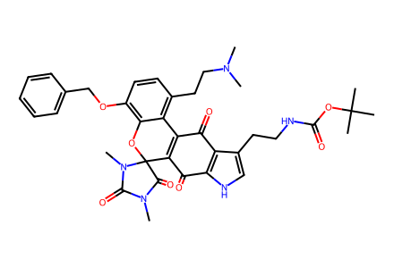
CN(C)CCc1ccc(OCc2ccccc2)c2c1C1=C(C(=O)c3[nH]cc(CCNC(=O)OC(C)(C)C)c3C1=O)C1(O2)C(=O)N(C)C(=O)N1C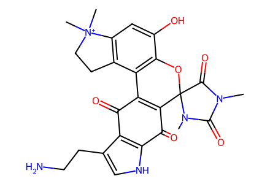
CN1C(=O)N(C)C2(Oc3c(O)cc4c(c3C3=C2C(=O)c2[nH]cc(CCN)c2C3=O)CC[N+]4(C)C)C1=O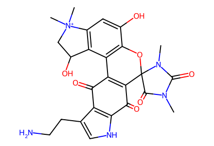
CN1C(=O)N(C)C2(Oc3c(O)cc4c(c3C3=C2C(=O)c2[nH]cc(CCN)c2C3=O)C(O)C[N+]4(C)C)C1=O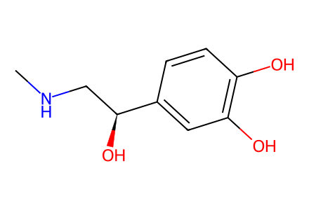
CNC[C@H](O)c1ccc(O)c(O)c1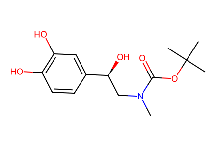
CN(C[C@H](O)c1ccc(O)c(O)c1)C(=O)OC(C)(C)C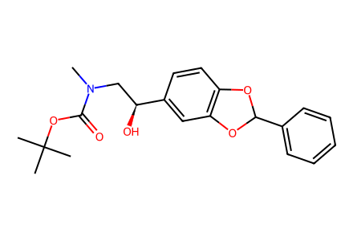
CN(C[C@H](O)c1ccc2c(c1)OC(c1ccccc1)O2)C(=O)OC(C)(C)C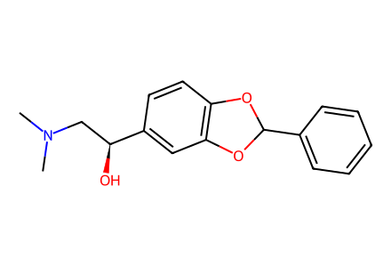
CN(C)C[C@H](O)c1ccc2c(c1)OC(c1ccccc1)O2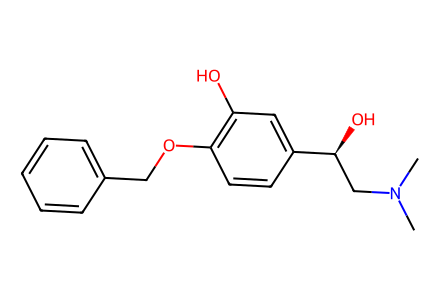
CN(C)C[C@H](O)c1ccc(OCc2ccccc2)c(O)c1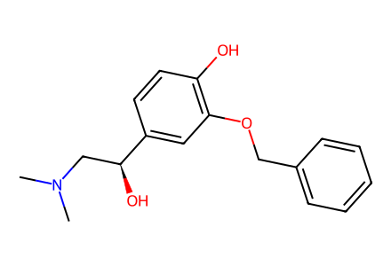
CN(C)C[C@H](O)c1ccc(O)c(OCc2ccccc2)c1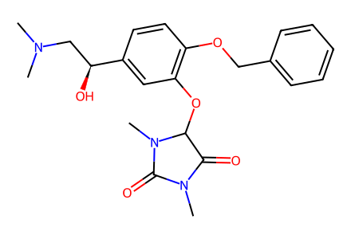
CN(C)C[C@H](O)c1ccc(OCc2ccccc2)c(OC2C(=O)N(C)C(=O)N2C)c1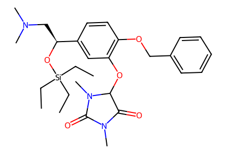
CC[Si](CC)(CC)O[C@@H](CN(C)C)c1ccc(OCc2ccccc2)c(OC2C(=O)N(C)C(=O)N2C)c1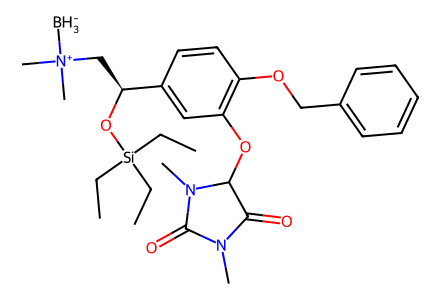
[BH3-][N+](C)(C)C[C@H](O[Si](CC)(CC)CC)c1ccc(OCc2ccccc2)c(OC2C(=O)N(C)C(=O)N2C)c1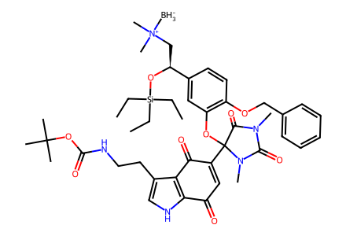
[BH3-][N+](C)(C)C[C@H](O[Si](CC)(CC)CC)c1ccc(OCc2ccccc2)c(OC2(C3=CC(=O)c4[nH]cc(CCNC(=O)OC(C)(C)C)c4C3=O)C(=O)N(C)C(=O)N2C)c1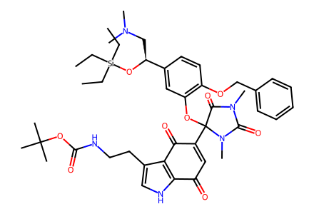
CC[Si](CC)(CC)O[C@@H](CN(C)C)c1ccc(OCc2ccccc2)c(OC2(C3=CC(=O)c4[nH]cc(CCNC(=O)OC(C)(C)C)c4C3=O)C(=O)N(C)C(=O)N2C)c1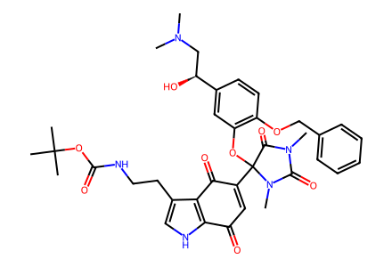
CN(C)C[C@H](O)c1ccc(OCc2ccccc2)c(OC2(C3=CC(=O)c4[nH]cc(CCNC(=O)OC(C)(C)C)c4C3=O)C(=O)N(C)C(=O)N2C)c1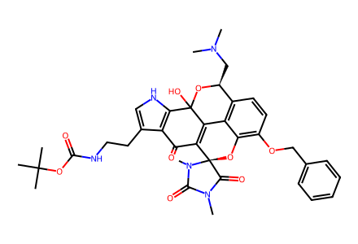
CN(C)C[C@@H]1OC2(O)C3=C(C(=O)c4c(CCNC(=O)OC(C)(C)C)c[nH]c42)[C@]2(Oc4c(OCc5ccccc5)ccc1c43)C(=O)N(C)C(=O)N2C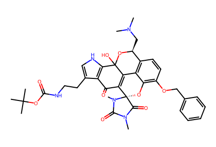
CN(C)C[C@@H]1OC2(O)C3=C(C(=O)c4c(CCNC(=O)OC(C)(C)C)c[nH]c42)[C@@]2(Oc4c(OCc5ccccc5)ccc1c43)C(=O)N(C)C(=O)N2C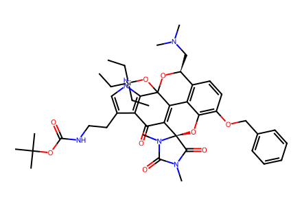
CC[Si](CC)(CC)OC12O[C@@H](CN(C)C)c3ccc(OCc4ccccc4)c4c3C1=C(C(=O)c1c(CCNC(=O)OC(C)(C)C)c[nH]c12)[C@]1(O4)C(=O)N(C)C(=O)N1C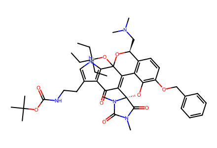
CC[Si](CC)(CC)OC12O[C@@H](CN(C)C)c3ccc(OCc4ccccc4)c4c3C1=C(C(=O)c1c(CCNC(=O)OC(C)(C)C)c[nH]c12)[C@@]1(O4)C(=O)N(C)C(=O)N1CCN1C(=O)N(C)[C@@]2(Oc3c(O)cc4c(c3C3=C2C(=O)c2c(CCN)c[nH]c2C3=O)[C@@H](O)C[N+]4(C)C)C1=OCN1C(=O)N(C)[C@]2(Oc3c(O)cc4c(c3C3=C2C(=O)c2c(CCN)c[nH]c2C3=O)[C@@H](O)C[N+]4(C)C)C1=OOc1cccc2[nH]ccc12O=[N+]([O-])CCc1c[nH]c2cccc(O)c12C=C[N+](=O)[O-]CC(C)(C)OC(=O)NCCc1c[nH]c2cccc(O)c12O=Cc1ccc(O)c(O)c1O=Cc1ccc(OCc2ccccc2)c(O)c1COC=Cc1ccc(OCc2ccccc2)c(O)c1O=CCc1ccc(OCc2ccccc2)c(O)c1CN(C)CCc1ccc(OCc2ccccc2)c(O)c1CNCCC(C)(C)OC(=O)NCCc1c(Br)[nH]c2c1C(=O)C=CC2=OCC(C)(C)OC(=O)NCCc1cn(C(=O)OC(C)(C)C)c2c1C(=O)C=CC2=OCC(C)(C)OC(=O)NCCc1cn(C(=O)OC(C)(C)C)c2c1C(=O)C=C(Br)C2=OCC(C)(C)OC(=O)NCCc1cn(C(=O)OC(C)(C)C)c2c1C(=O)C(Br)=CC2=OCC(C)(C)OC(=O)NCCc1c[nH]c2cccc(O[Si](C)(C)C(C)(C)C)c12CC(C)(C)OC(=O)NCCc1cn(C(=O)OC(C)(C)C)c2cccc(O[Si](C)(C)C(C)(C)C)c12CC(C)(C)OC(=O)NCCc1cn(C(=O)OC(C)(C)C)c2cccc(O)c12CC(C)(C)OC(=O)NCCc1cn(C(=O)OC(C)(C)C)c2ccc(Br)c(O)c12